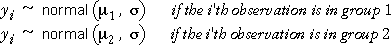

Combining the models for the two groups
The variable of interest can often be modelled by a normal distribution in
each group with the same standard deviation, σ,
but possibly with different means in the two groups.

These two models can be combined into a single general linear model, using
two 'explanatory variables', di (1)
and di (2),
that can only take the values 0 or 1 and are called indicator variables.
Note that this GLM does not have a constant term (intercept).
Matrix representation of the model
The next diagram shows this general linear model in matrix form for a data
set with 6 observations from each of 2 groups.

Click on any y-value to see how the indicator variables pick out the appropriate
mean for its group.
Alternative parameterisation with baseline group
A different way to express the same model is more useful — it simplifies
the test for equal group means and can be easily extended to more complex
situations.

In this parameterisation, group 1 is considered to be the baseline
group with mean µ1
and the mean for group 2 is δ2
higher. There is a single indicator variable that 'turns on' the parameter
δ2
for group 2, but not for group 1.
The parameter δ2
is the difference between the mean response in group 2 and that in
group 1 (the baseline group).
Matrix representation of the model
The next diagram shows this general linear model in matrix form.
Click on any y-value to see how the indicator variable adds the term δ2
only to observations in group 2.